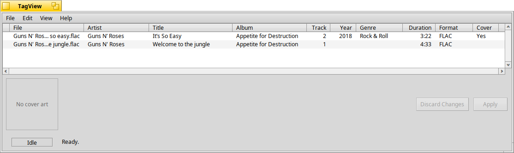

TagView
A BColumnListView that shows TagRecord rows.
#include "tagkit/TagView.h"
Detailed Description
TagView is a BColumnListView set up to show
TagRecords: file name, artist, title, album, track,
year, genre, duration, format and cover art columns. A row that has changes not
yet written to the file is marked with a leading bullet. Other apps that want a
quick tag-listing widget can use it directly.
Right-clicking the Artist, Title, Album, Track, Year or Genre cell of a row
selects the row and posts the message given to SetEditMessage().
Views never act on the user's behalf themselves. Where something needs to happen (an edit, a menu, a drop), they post a message you give them to the window, with details added; the window decides what to do.

TagView in the list view: a TagView with one row per file, and the cover art of the last selected file under it.
TagRow
class TagRow : public BRowOne row; keeps a copy of the record it was built from. |
Member Functions
TagView(const char* name)Creates the view. |
TagRow* AddTag(const TagRecord& record)Adds a row for a record. |
void Clear()Removes every row. |
TagRow* SelectedRow() constThe currently selected row. |
const TagRecord* SelectedRecord() constThe record behind the selected row. |
void UpdateRow(TagRow* row, const TagRecord& record)Replaces a row's record and refreshes its displayed fields. |
void SetSelectionChangedMessage(BMessage* message)Sets the message posted when the selection changes. |
void SetEditMessage(BMessage* message)Sets the message posted when a field is right-clicked. |
Documentation
class TagRow : public BRow
One row; keeps a copy of the record it was built from.
Callers can retrieve the record, for example to act on the current selection.
TagRow(const TagRecord& record)- Builds a row for the record.
const TagRecord& Record() const- The row's record.
void SetRecord(const TagRecord& record)- Replaces the record. (To also refresh the displayed fields, use
TagView::UpdateRow().)
TagView(const char* name)
Creates the view.
TagRow* AddTag(const TagRecord& record)
Adds a row for a record.
The view keeps ownership of the row, as usual for a BColumnListView.
Parameters
record- The record to show.
Returns
The new row.
void Clear()
Removes every row.
TagRow* SelectedRow() const
The currently selected row.
Callers that need to modify the selection afterwards (for example, applying a MusicBrainz match to it) want this over SelectedRecord().
Returns
The row, or NULL if nothing is selected.
const TagRecord* SelectedRecord() const
The record behind the selected row.
Returns
The record, or NULL if nothing is selected.
void UpdateRow(TagRow* row, const TagRecord& record)
Replaces a row's record and refreshes its displayed fields.
Use this once a MusicBrainz match or a hand edit has changed the record.
Parameters
row- The row.
record- Its new record.
void SetSelectionChangedMessage(BMessage* message)
Sets the message posted when the selection changes.
Posted to the window whenever a row is picked or the selection is cleared. The view takes ownership of the message.
void SetEditMessage(BMessage* message)
Sets the message posted when a field is right-clicked.
The posted copy carries:
"field"- int32: the tag_field.
"where"- BPoint: the pointer's screen position.
"width"- float: the cell's width.
"row"- pointer: the
TagRow.
So whatever edits the field can open at the cell. The view takes ownership of the message.
src/tagkit.